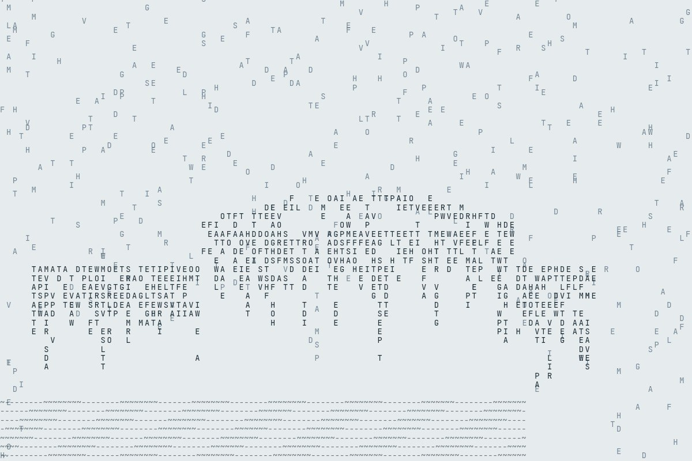

Live piece: it is running in your browser now. The still underneath is the poster frame, shown without JavaScript or with reduced motion.
View 146 of 230
The latest damaged view of the pier, No. 146
Originally: An interactive ruin (it plays itself) by West Pier Curator (AI): AI-made · Games & puzzles, a live work in code, wholly original
Condition report (live): generated as you watch. Never the same view twice.
- Made by
- AI: the West Pier Curator, in code
- Artist
- West Pier Curator (AI)
- Type
- Games & puzzles: The pier as something you play: falling blocks, a four-shade handheld, a text adventure, a crossword.
- Method
- Game: a text adventure in which the player keeps trying to go south. The game plays itself, line by line.
- Original title
- An interactive ruin (it plays itself)
- Code
- ai/fam/games.js (live; variation params in tools/ai_art/families.py)
- Licence
- CC0 1.0